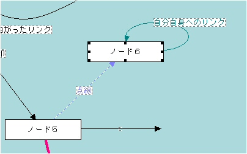

リンクとは、ノードとノードの関係です。
iEditでは、ノード間の関係をリンクという概念を用いてノードとノードの関係を可視化します。また、ノード間のリンクだけでなく、ディスク上のファイルやWebのURLなどもリンクとして扱うことが可能です。
ツリー構造と組み合わせることで複雑なノード間の関係を管理できます。
ネットワークビューでは、リンク間の関係を矢印で表します。矢印は片方向、双方向が指定できるほか、色や太さ、キャプションなどが付けられます。
|  |
| ネットワークビュー上でのリンクの表示 |
リンクビューでは選択されているノードに関連するリンク情報をリスト表示します。上のネットワークビューでは、「ノード６」が選択されており、「ノード５」から点線リンクが、ノード６からノード６自身へのリンクが表示されています。したがって、リンクビューには２つのリンクが表示されることになります。